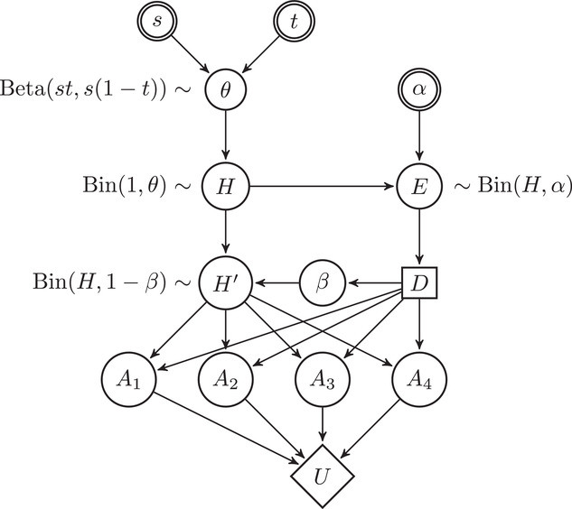
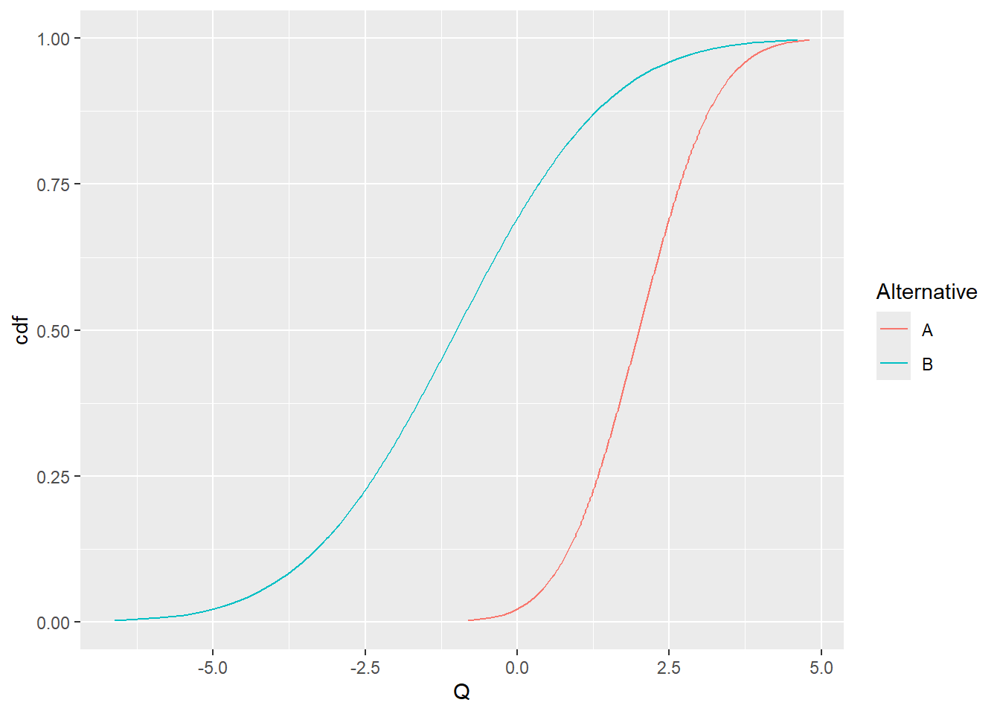
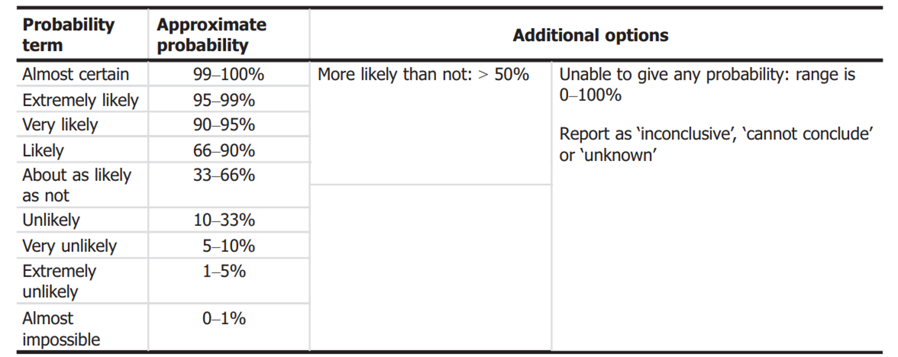
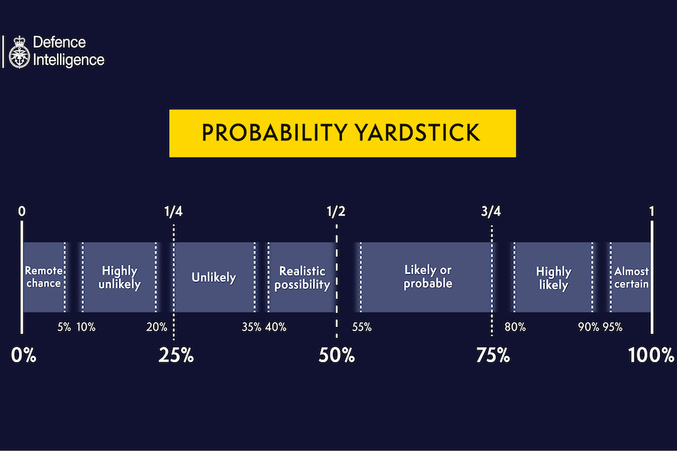
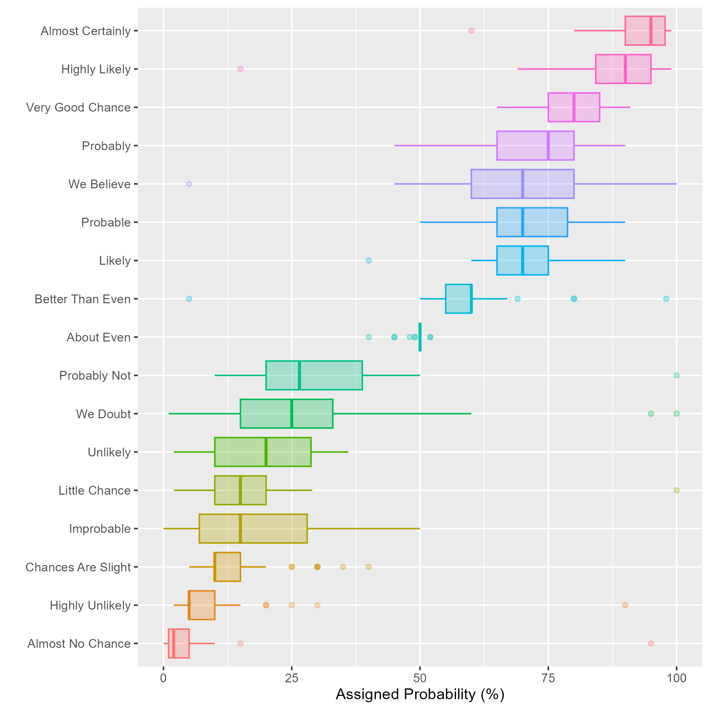

library(ggplot2)Decision making under uncertainty
BADT 2026
Sure thing principle
Umbrella
Bayes optimal decisions
Graph
\[\delta(D)^* = \arg \max_{\delta} E^{\theta|D}U(\delta)\]
The stan example
Multi-attribute utility
Let \(U(a_i)\) be the utility on a specific attribute \(a_i\)
Additive utility function
\[U(a_1,\dots,a_n)=\textstyle\sum_{i=1}^n k_i U_i(a_i)\]
If we can identify attributes and create utilities over them, we can construct an overall utility function

Bounded probabilities
Imprecise probability theory.
From \(P\) to \(\underline P, \overline P\)
Derive lower bound on expected utility and maximise that.
\[\delta(D)^* = \arg \max_{\delta} \underline E^{\theta|D}U(\delta)\]
Portfolio theory
A portfolio is a linear combination of assets
The assets vary over time (backward or forward looking)
The efficiency frontier is determined by the mean-variance relationship
Variance is a measure of risk
Covariation between assets play a large role since it influences the variance and thereby where a portfolio lies in relation the efficieny frontier
Multi-criteria decision making
screen out inferior options
consider and weight in multiple criteria
Decision analysis using stochastic dominance
A decision rule of stochastic dominance. Note that this is not a Bayesian decision rule.
Let us denote uncertainty in a quantity of interest \(Q\) under two decision alternatives \(A\) and \(B\), as \(Q_A\) and \(Q_B\). Alternative \(A\) is stochastically dominating alternative \(B\) of the first order if
\[P(Q_A\leq q) < P(Q_B\leq q) \ \forall q \] In other words, \(A\) is better than \(B\) if the cumulative probability distribution for A is always to the right of the cumulative probability distribution for \(B\).
pp <- ppoints(200)
df <- data.frame(Q = c(qnorm(pp,2,1),qnorm(pp,-1,2)), cdf=pp,Alternative = rep(c("A","B"),each=length(pp)))
ggplot(df,aes(x=Q,y=cdf,col=Alternative)) +
geom_line()
Robust decison making
- Keep options open
Quantitative: Scenario based analysis
Fruit break and buses
Uncertainty analysis
Steps
Identify sources of uncertainty
Evaluate the combined impact on the conclusion
Communicate (un)certainty in conclusion
Characterisation of overall uncertainty
Evaluate in one step the impact of all sources of uncertainty using expert judgement.
OR
Break assessment into parts, evaluate the impact on the parts and combine by calculation. Then evaluate the combined impact of any additional sources of uncertainty on the conclusion.
Summarise well
- Avoid multiple summaries with an unclear relation
e.g. summaries of indirect and direct uncertainty (exaplained in class)
Use an expression of uncertainty for which there is a decision rule that the decision maker is willing to use
- Make sure the decision maker has a decision rule given the way uncertainty is expressed
Bayesian decision theory matches uncertainty expressed by subjective probability
second order uncertainty, e.g. a bound on a probability can be minimax rule
second order uncertainty, where the second order measure indicates reliability of the assessment, set a threshold for reliability and use the resulting bounds with the minimax decision rule
info-gap decision theory - info-gaps
qualitative expression, low, moderate, high - define a rule for what action to take given the qualitative expression
Scenario analysis - an option to consider non-quantified uncertainties
Use sensitivie analysis to support characterisation
- Use sensitivity analysis to support the characterisation of overall uncertainty
Sensitivity analysis is not a way to quantify uncertainty, it helps to evaluate the influence of changes in model (parameter, structure, assumptions) on the quantity or outcome of interest (model output)
Communicate remaining uncertainties
Communicate any remaining uncertainties that are not taken into account in the characterisation of overall uncertainty
Use verbal to support quantitative expressions (not the other way around)


